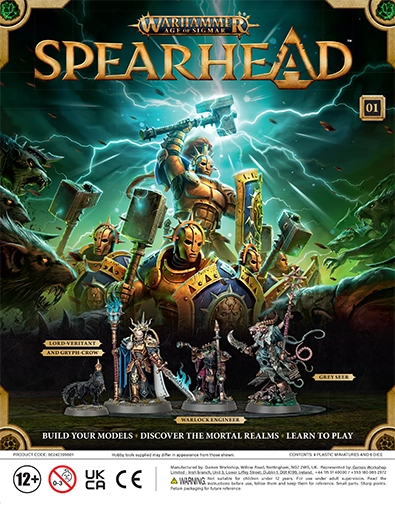

Spearhead Magazine 1 - Lord-Veritant with Gryph-crow, a Grey Seer, and a Warlock Engineer
Lord-Veritant with Gryph-crow
A Lord-Veritant’s role is to discover corruption, heresy and treason for Sigmar and then bring down his Ruination Chambers to wipe out those who oppose him. Veritas means ‘truth’ in Latin so it’s a very fitting name to one who wants to shine a light on the evils of the Mortal Realms.
Grey Seer
Grey Seers are the spiritual leaders of the Skaven, and are tasked with interpreting the will of the Great Horned Rat. They are powerful psykers, and are able to cast spells that can devastate their enemies.
Warlock Engineer
Warlock Engineers are the technical experts of the Skaven, and are responsible for the design and construction of the Skaven's war machines. They are also powerful psykers, and are able to cast spells that can devastate their enemies.